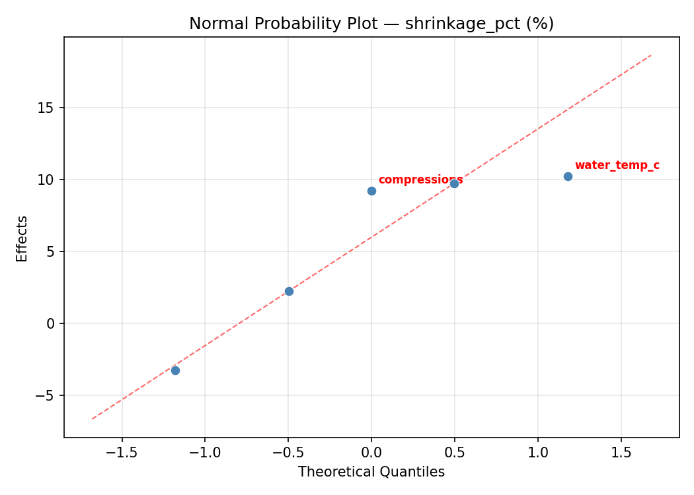
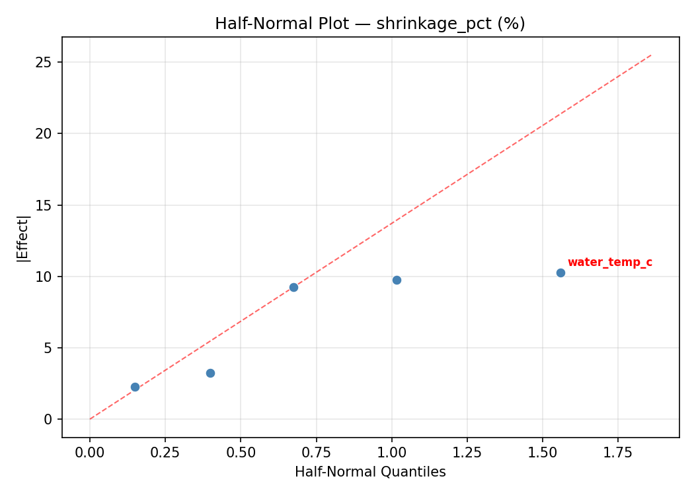
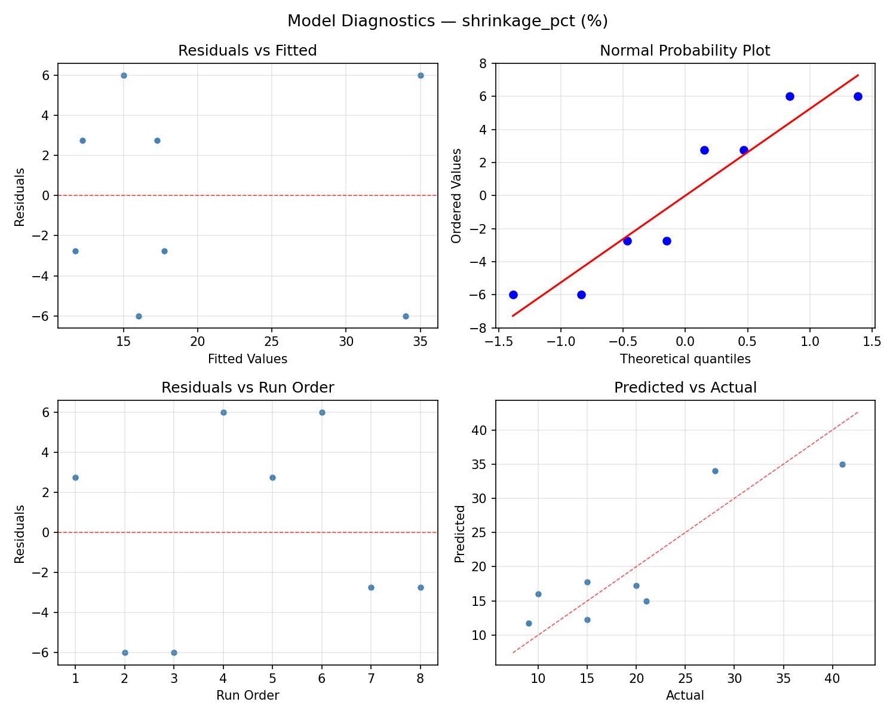
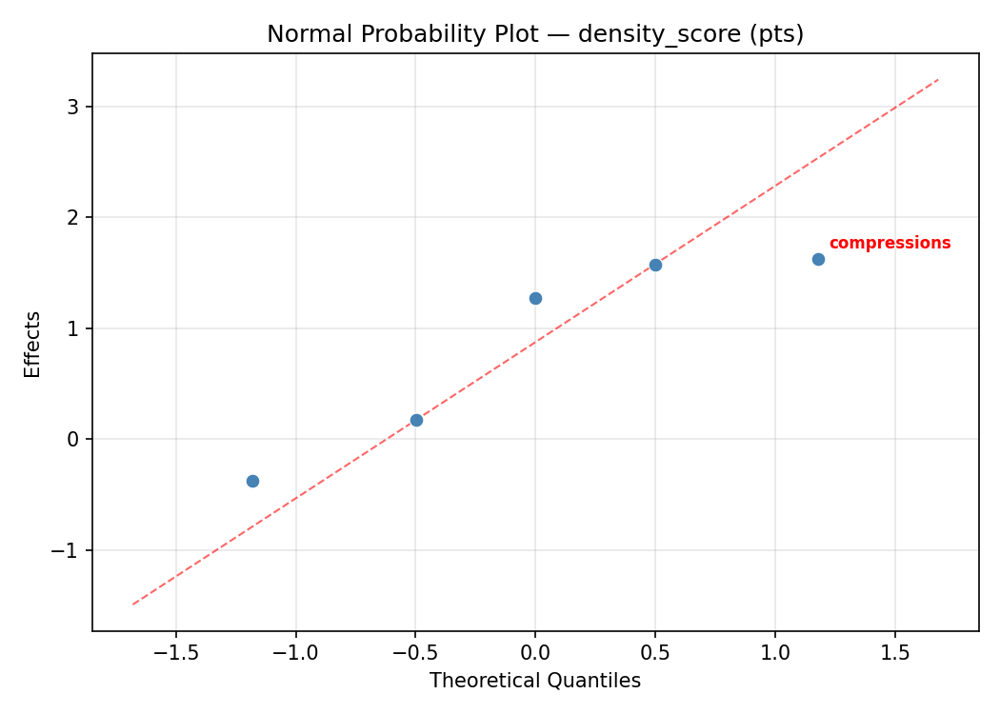
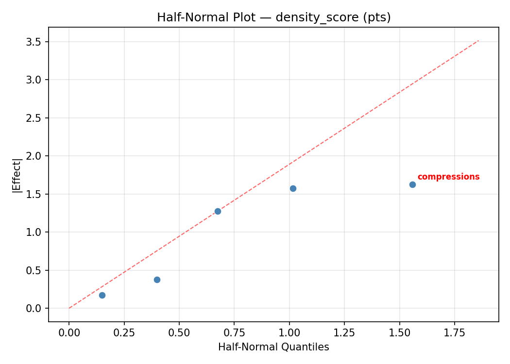
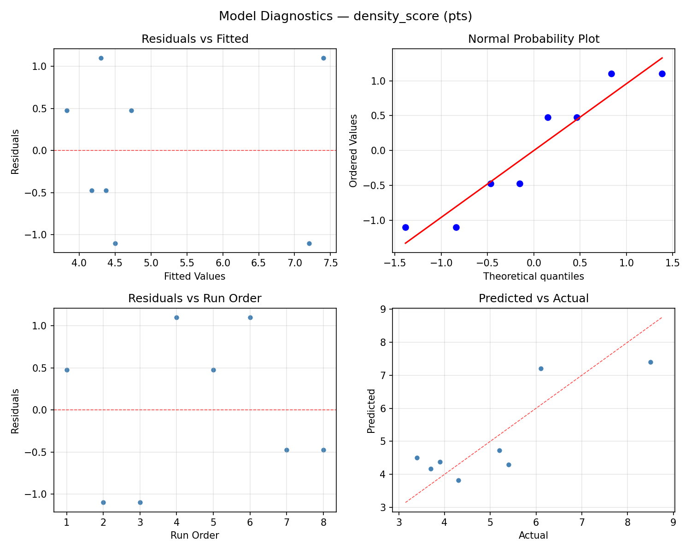

Summary
This experiment investigates wool felting process. Fractional factorial screening of water temperature, agitation time, soap concentration, fiber blend, and compression cycles for shrinkage control and density.
The design varies 5 factors: water temp c (C), ranging from 40 to 80, agitation min (min), ranging from 5 to 30, soap ml L (mL/L), ranging from 1 to 10, merino pct (%), ranging from 50 to 100, and compressions (cycles), ranging from 10 to 50. The goal is to optimize 2 responses: shrinkage pct (%) (minimize) and density score (pts) (maximize). Fixed conditions held constant across all runs include technique = wet_felting, thickness = medium.
A fractional factorial design reduces the number of runs from 32 to 8 by deliberately confounding higher-order interactions. This is ideal for screening — identifying which of the 5 factors matter most before investing in a full study.
Key Findings
For shrinkage pct, the most influential factors were compressions (44.6%), agitation min (34.9%), merino pct (15.7%). The best observed value was 9.0 (at water temp c = 40, agitation min = 5, soap ml L = 10).
For density score, the most influential factors were compressions (46.8%), agitation min (29.5%), water temp c (10.8%). The best observed value was 8.5 (at water temp c = 80, agitation min = 30, soap ml L = 10).
Recommended Next Steps
- Follow up with a response surface design (CCD or Box-Behnken) on the top 3–4 factors to model curvature and find the true optimum.
- Consider whether any fixed factors should be varied in a future study.
- The screening results can guide factor reduction — drop factors contributing less than 5% and re-run with a smaller, more focused design.
Experimental Setup
Factors
| Factor | Low | High | Unit |
|---|
water_temp_c | 40 | 80 | C |
agitation_min | 5 | 30 | min |
soap_ml_L | 1 | 10 | mL/L |
merino_pct | 50 | 100 | % |
compressions | 10 | 50 | cycles |
Fixed: technique = wet_felting, thickness = medium
Responses
| Response | Direction | Unit |
|---|
shrinkage_pct | ↓ minimize | % |
density_score | ↑ maximize | pts |
Configuration
{
"metadata": {
"name": "Wool Felting Process",
"description": "Fractional factorial screening of water temperature, agitation time, soap concentration, fiber blend, and compression cycles for shrinkage control and density"
},
"factors": [
{
"name": "water_temp_c",
"levels": [
"40",
"80"
],
"type": "continuous",
"unit": "C"
},
{
"name": "agitation_min",
"levels": [
"5",
"30"
],
"type": "continuous",
"unit": "min"
},
{
"name": "soap_ml_L",
"levels": [
"1",
"10"
],
"type": "continuous",
"unit": "mL/L"
},
{
"name": "merino_pct",
"levels": [
"50",
"100"
],
"type": "continuous",
"unit": "%"
},
{
"name": "compressions",
"levels": [
"10",
"50"
],
"type": "continuous",
"unit": "cycles"
}
],
"fixed_factors": {
"technique": "wet_felting",
"thickness": "medium"
},
"responses": [
{
"name": "shrinkage_pct",
"optimize": "minimize",
"unit": "%"
},
{
"name": "density_score",
"optimize": "maximize",
"unit": "pts"
}
],
"settings": {
"operation": "fractional_factorial",
"test_script": "use_cases/184_wool_felting/sim.sh"
}
}
Experimental Matrix
The Fractional Factorial Design produces 8 runs. Each row is one experiment with specific factor settings.
| Run | water_temp_c | agitation_min | soap_ml_L | merino_pct | compressions |
|---|
| 1 | 40 | 30 | 10 | 50 | 10 |
| 2 | 80 | 5 | 1 | 50 | 10 |
| 3 | 80 | 30 | 1 | 100 | 10 |
| 4 | 80 | 30 | 10 | 100 | 50 |
| 5 | 40 | 30 | 1 | 50 | 50 |
| 6 | 80 | 5 | 10 | 50 | 50 |
| 7 | 40 | 5 | 1 | 100 | 50 |
| 8 | 40 | 5 | 10 | 100 | 10 |
Step-by-Step Workflow
1
Preview the design
$ python doe.py info --config use_cases/184_wool_felting/config.json
2
Generate the runner script
$ python doe.py generate --config use_cases/184_wool_felting/config.json \
--output use_cases/184_wool_felting/results/run.sh --seed 42
3
Execute the experiments
$ bash use_cases/184_wool_felting/results/run.sh
4
Analyze results
$ python doe.py analyze --config use_cases/184_wool_felting/config.json
5
Get optimization recommendations
$ python doe.py optimize --config use_cases/184_wool_felting/config.json
6
Multi-objective optimization
With 2 competing responses, use --multi to find the best compromise via Derringer–Suich desirability.
$ python doe.py optimize --config use_cases/184_wool_felting/config.json --multi
7
Generate the HTML report
$ python doe.py report --config use_cases/184_wool_felting/config.json \
--output use_cases/184_wool_felting/results/report.html
Features Exercised
| Feature | Value |
|---|
| Design type | fractional_factorial |
| Factor types | continuous (all 5) |
| Arg style | double-dash |
| Responses | 2 (shrinkage_pct ↓, density_score ↑) |
| Total runs | 8 |
Analysis Results
Generated from actual experiment runs using the DOE Helper Tool.
Response: shrinkage_pct
Top factors: compressions (44.6%), agitation_min (34.9%), merino_pct (15.7%).
ANOVA
| Source | DF | SS | MS | F | p-value |
|---|
| Source | DF | SS | MS | F | p-value |
| water_temp_c | 1 | 1.1250 | 1.1250 | 0.007 | 0.9360 |
| agitation_min | 1 | 105.1250 | 105.1250 | 0.667 | 0.4513 |
| soap_ml_L | 1 | 0.1250 | 0.1250 | 0.001 | 0.9786 |
| merino_pct | 1 | 21.1250 | 21.1250 | 0.134 | 0.7293 |
| compressions | 1 | 171.1250 | 171.1250 | 1.085 | 0.3453 |
| water_temp_c*agitation_min | 1 | 21.1250 | 21.1250 | 0.134 | 0.7293 |
| water_temp_c*soap_ml_L | 1 | 171.1250 | 171.1250 | 1.085 | 0.3453 |
| water_temp_c*merino_pct | 1 | 105.1250 | 105.1250 | 0.667 | 0.4513 |
| water_temp_c*compressions | 1 | 0.1250 | 0.1250 | 0.001 | 0.9786 |
| agitation_min*soap_ml_L | 1 | 153.1250 | 153.1250 | 0.971 | 0.3697 |
| agitation_min*merino_pct | 1 | 1.1250 | 1.1250 | 0.007 | 0.9360 |
| agitation_min*compressions | 1 | 325.1250 | 325.1250 | 2.062 | 0.2105 |
| soap_ml_L*merino_pct | 1 | 325.1250 | 325.1250 | 2.062 | 0.2105 |
| soap_ml_L*compressions | 1 | 1.1250 | 1.1250 | 0.007 | 0.9360 |
| merino_pct*compressions | 1 | 153.1250 | 153.1250 | 0.971 | 0.3697 |
| Error | (Lenth | PSE) | 5 | 788.4375 | 157.6875 |
| Total | 7 | 776.8750 | 110.9821 | | |
Pareto Chart

Main Effects Plot

Normal Probability Plot of Effects

Half-Normal Plot of Effects

Model Diagnostics

Response: density_score
Top factors: compressions (46.8%), agitation_min (29.5%), water_temp_c (10.8%).
ANOVA
| Source | DF | SS | MS | F | p-value |
|---|
| Source | DF | SS | MS | F | p-value |
| water_temp_c | 1 | 0.2812 | 0.2812 | 0.089 | 0.7772 |
| agitation_min | 1 | 2.1013 | 2.1013 | 0.667 | 0.4513 |
| soap_ml_L | 1 | 0.0112 | 0.0112 | 0.004 | 0.9547 |
| merino_pct | 1 | 0.2812 | 0.2812 | 0.089 | 0.7772 |
| compressions | 1 | 5.2812 | 5.2812 | 1.676 | 0.2521 |
| water_temp_c*agitation_min | 1 | 0.2812 | 0.2812 | 0.089 | 0.7772 |
| water_temp_c*soap_ml_L | 1 | 5.2813 | 5.2813 | 1.676 | 0.2521 |
| water_temp_c*merino_pct | 1 | 2.1012 | 2.1012 | 0.667 | 0.4513 |
| water_temp_c*compressions | 1 | 0.0113 | 0.0113 | 0.004 | 0.9547 |
| agitation_min*soap_ml_L | 1 | 4.9613 | 4.9613 | 1.574 | 0.2651 |
| agitation_min*merino_pct | 1 | 0.2812 | 0.2812 | 0.089 | 0.7772 |
| agitation_min*compressions | 1 | 6.6612 | 6.6612 | 2.113 | 0.2058 |
| soap_ml_L*merino_pct | 1 | 6.6613 | 6.6613 | 2.113 | 0.2058 |
| soap_ml_L*compressions | 1 | 0.2813 | 0.2813 | 0.089 | 0.7772 |
| merino_pct*compressions | 1 | 4.9612 | 4.9612 | 1.574 | 0.2651 |
| Error | (Lenth | PSE) | 5 | 15.7594 | 3.1519 |
| Total | 7 | 19.5787 | 2.7970 | | |
Pareto Chart

Main Effects Plot

Normal Probability Plot of Effects

Half-Normal Plot of Effects

Model Diagnostics

Response Surface Plots
3D surfaces fitted with quadratic RSM. Red dots are observed data points.
density score agitation min vs compressions

density score agitation min vs merino pct

density score agitation min vs soap ml L

density score merino pct vs compressions

density score soap ml L vs compressions

density score soap ml L vs merino pct

density score water temp c vs agitation min

density score water temp c vs compressions

density score water temp c vs merino pct

density score water temp c vs soap ml L

shrinkage pct agitation min vs compressions

shrinkage pct agitation min vs merino pct

shrinkage pct agitation min vs soap ml L

shrinkage pct merino pct vs compressions

shrinkage pct soap ml L vs compressions

shrinkage pct soap ml L vs merino pct

shrinkage pct water temp c vs agitation min

shrinkage pct water temp c vs compressions

shrinkage pct water temp c vs merino pct

shrinkage pct water temp c vs soap ml L

Multi-Objective Optimization
When responses compete, Derringer–Suich desirability finds the best compromise.
Each response is scaled to a 0–1 desirability, then combined via a weighted geometric mean.
Overall Desirability
D = 0.5199
Per-Response Desirability
| Response | Weight | Desirability | Predicted | Dir |
|---|
shrinkage_pct |
1.0 |
|
27.16 0.4386 27.16 % |
↓ |
density_score |
1.5 |
|
6.41 0.5823 6.41 pts |
↑ |
Recommended Settings
| Factor | Value |
|---|
water_temp_c | 69.17 C |
agitation_min | 25.93 min |
soap_ml_L | 9.328 mL/L |
merino_pct | 99.31 % |
compressions | 16.25 cycles |
Source: from RSM model prediction
Trade-off Summary
Sacrifice = how much worse than single-objective best.
| Response | Predicted | Best Observed | Sacrifice |
|---|
density_score | 6.41 | 8.50 | +2.09 |
Top 3 Runs by Desirability
| Run | D | Factor Settings |
|---|
| #6 | 0.4761 | water_temp_c=40, agitation_min=5, soap_ml_L=10, merino_pct=100, compressions=10 |
| #5 | 0.4585 | water_temp_c=40, agitation_min=5, soap_ml_L=1, merino_pct=100, compressions=50 |
Model Quality
| Response | R² | Type |
|---|
density_score | 0.5749 | linear |
Full Multi-Objective Output
============================================================
MULTI-OBJECTIVE OPTIMIZATION
Method: Derringer-Suich Desirability Function
============================================================
Overall desirability: D = 0.5199
Response Weight Desirability Predicted Direction
---------------------------------------------------------------------
shrinkage_pct 1.0 0.4386 27.16 % ↓
density_score 1.5 0.5823 6.41 pts ↑
Recommended settings:
water_temp_c = 69.17 C
agitation_min = 25.93 min
soap_ml_L = 9.328 mL/L
merino_pct = 99.31 %
compressions = 16.25 cycles
(from RSM model prediction)
Trade-off summary:
shrinkage_pct: 27.16 (best observed: 9.00, sacrifice: +18.16)
density_score: 6.41 (best observed: 8.50, sacrifice: +2.09)
Model quality:
shrinkage_pct: R² = 0.5775 (linear)
density_score: R² = 0.5749 (linear)
Top 3 observed runs by overall desirability:
1. Run #3 (D=0.4787): water_temp_c=40, agitation_min=30, soap_ml_L=10, merino_pct=50, compressions=10
2. Run #6 (D=0.4761): water_temp_c=40, agitation_min=5, soap_ml_L=10, merino_pct=100, compressions=10
3. Run #5 (D=0.4585): water_temp_c=40, agitation_min=5, soap_ml_L=1, merino_pct=100, compressions=50
Full Analysis Output
=== Main Effects: shrinkage_pct ===
Factor Effect Std Error % Contribution
--------------------------------------------------------------
compressions 9.2500 3.7246 44.6%
agitation_min -7.2500 3.7246 34.9%
merino_pct -3.2500 3.7246 15.7%
water_temp_c 0.7500 3.7246 3.6%
soap_ml_L 0.2500 3.7246 1.2%
=== ANOVA Table: shrinkage_pct ===
Source DF SS MS F p-value
-----------------------------------------------------------------------------
water_temp_c 1 1.1250 1.1250 0.007 0.9360
agitation_min 1 105.1250 105.1250 0.667 0.4513
soap_ml_L 1 0.1250 0.1250 0.001 0.9786
merino_pct 1 21.1250 21.1250 0.134 0.7293
compressions 1 171.1250 171.1250 1.085 0.3453
water_temp_c*agitation_min 1 21.1250 21.1250 0.134 0.7293
water_temp_c*soap_ml_L 1 171.1250 171.1250 1.085 0.3453
water_temp_c*merino_pct 1 105.1250 105.1250 0.667 0.4513
water_temp_c*compressions 1 0.1250 0.1250 0.001 0.9786
agitation_min*soap_ml_L 1 153.1250 153.1250 0.971 0.3697
agitation_min*merino_pct 1 1.1250 1.1250 0.007 0.9360
agitation_min*compressions 1 325.1250 325.1250 2.062 0.2105
soap_ml_L*merino_pct 1 325.1250 325.1250 2.062 0.2105
soap_ml_L*compressions 1 1.1250 1.1250 0.007 0.9360
merino_pct*compressions 1 153.1250 153.1250 0.971 0.3697
Error (Lenth PSE) 5 788.4375 157.6875
Total 7 776.8750 110.9821
Note: Error estimated using Lenth's pseudo-standard-error (unreplicated design)
=== Interaction Effects: shrinkage_pct ===
Factor A Factor B Interaction % Contribution
------------------------------------------------------------------------
agitation_min compressions -12.7500 19.8%
soap_ml_L merino_pct -12.7500 19.8%
water_temp_c soap_ml_L 9.2500 14.3%
agitation_min soap_ml_L -8.7500 13.6%
merino_pct compressions -8.7500 13.6%
water_temp_c merino_pct -7.2500 11.2%
water_temp_c agitation_min -3.2500 5.0%
agitation_min merino_pct 0.7500 1.2%
soap_ml_L compressions 0.7500 1.2%
water_temp_c compressions 0.2500 0.4%
=== Summary Statistics: shrinkage_pct ===
water_temp_c:
Level N Mean Std Min Max
------------------------------------------------------------
40 4 19.5000 6.1373 15.0000 28.0000
80 4 20.2500 14.8633 9.0000 41.0000
agitation_min:
Level N Mean Std Min Max
------------------------------------------------------------
30 4 23.5000 13.9164 10.0000 41.0000
5 4 16.2500 5.5000 9.0000 21.0000
soap_ml_L:
Level N Mean Std Min Max
------------------------------------------------------------
1 4 19.7500 7.4106 10.0000 28.0000
10 4 20.0000 14.2829 9.0000 41.0000
merino_pct:
Level N Mean Std Min Max
------------------------------------------------------------
100 4 21.5000 13.6260 10.0000 41.0000
50 4 18.2500 8.1394 9.0000 28.0000
compressions:
Level N Mean Std Min Max
------------------------------------------------------------
10 4 15.2500 4.5000 10.0000 21.0000
50 4 24.5000 13.4784 9.0000 41.0000
=== Main Effects: density_score ===
Factor Effect Std Error % Contribution
--------------------------------------------------------------
compressions 1.6250 0.5913 46.8%
agitation_min -1.0250 0.5913 29.5%
water_temp_c 0.3750 0.5913 10.8%
merino_pct -0.3750 0.5913 10.8%
soap_ml_L 0.0750 0.5913 2.2%
=== ANOVA Table: density_score ===
Source DF SS MS F p-value
-----------------------------------------------------------------------------
water_temp_c 1 0.2812 0.2812 0.089 0.7772
agitation_min 1 2.1013 2.1013 0.667 0.4513
soap_ml_L 1 0.0112 0.0112 0.004 0.9547
merino_pct 1 0.2812 0.2812 0.089 0.7772
compressions 1 5.2812 5.2812 1.676 0.2521
water_temp_c*agitation_min 1 0.2812 0.2812 0.089 0.7772
water_temp_c*soap_ml_L 1 5.2813 5.2813 1.676 0.2521
water_temp_c*merino_pct 1 2.1012 2.1012 0.667 0.4513
water_temp_c*compressions 1 0.0113 0.0113 0.004 0.9547
agitation_min*soap_ml_L 1 4.9613 4.9613 1.574 0.2651
agitation_min*merino_pct 1 0.2812 0.2812 0.089 0.7772
agitation_min*compressions 1 6.6612 6.6612 2.113 0.2058
soap_ml_L*merino_pct 1 6.6613 6.6613 2.113 0.2058
soap_ml_L*compressions 1 0.2813 0.2813 0.089 0.7772
merino_pct*compressions 1 4.9612 4.9612 1.574 0.2651
Error (Lenth PSE) 5 15.7594 3.1519
Total 7 19.5787 2.7970
Note: Error estimated using Lenth's pseudo-standard-error (unreplicated design)
=== Interaction Effects: density_score ===
Factor A Factor B Interaction % Contribution
------------------------------------------------------------------------
agitation_min compressions -1.8250 17.1%
soap_ml_L merino_pct -1.8250 17.1%
water_temp_c soap_ml_L 1.6250 15.3%
agitation_min soap_ml_L -1.5750 14.8%
merino_pct compressions -1.5750 14.8%
water_temp_c merino_pct -1.0250 9.6%
water_temp_c agitation_min -0.3750 3.5%
agitation_min merino_pct 0.3750 3.5%
soap_ml_L compressions 0.3750 3.5%
water_temp_c compressions 0.0750 0.7%
=== Summary Statistics: density_score ===
water_temp_c:
Level N Mean Std Min Max
------------------------------------------------------------
40 4 4.8750 0.9811 3.9000 6.1000
80 4 5.2500 2.3388 3.4000 8.5000
agitation_min:
Level N Mean Std Min Max
------------------------------------------------------------
30 4 5.5750 2.2500 3.4000 8.5000
5 4 4.5500 0.8737 3.7000 5.4000
soap_ml_L:
Level N Mean Std Min Max
------------------------------------------------------------
1 4 5.0250 1.1500 3.4000 6.1000
10 4 5.1000 2.2804 3.7000 8.5000
merino_pct:
Level N Mean Std Min Max
------------------------------------------------------------
100 4 5.2500 2.2956 3.4000 8.5000
50 4 4.8750 1.0782 3.7000 6.1000
compressions:
Level N Mean Std Min Max
------------------------------------------------------------
10 4 4.2500 0.8505 3.4000 5.4000
50 4 5.8750 2.0106 3.7000 8.5000
Optimization Recommendations
=== Optimization: shrinkage_pct ===
Direction: minimize
Best observed run: #8
water_temp_c = 40
agitation_min = 5
soap_ml_L = 10
merino_pct = 100
compressions = 10
Value: 9.0
RSM Model (linear, R² = 0.6547, Adj R² = -0.2085):
Coefficients:
intercept +19.8750
water_temp_c +3.1250
agitation_min +3.6250
soap_ml_L +1.3750
merino_pct -1.1250
compressions +6.1250
Predicted optimum (from linear model, at observed points):
water_temp_c = 80
agitation_min = 30
soap_ml_L = 10
merino_pct = 100
compressions = 50
Predicted value: 33.0000
Surface optimum (via L-BFGS-B, linear model):
water_temp_c = 40
agitation_min = 5
soap_ml_L = 1
merino_pct = 100
compressions = 10
Predicted value: 4.5000
Model quality: Moderate fit — use predictions directionally, not precisely.
Factor importance:
1. compressions (effect: 12.2, contribution: 39.8%)
2. agitation_min (effect: -7.2, contribution: 23.6%)
3. water_temp_c (effect: 6.2, contribution: 20.3%)
4. soap_ml_L (effect: 2.8, contribution: 8.9%)
5. merino_pct (effect: 2.2, contribution: 7.3%)
=== Optimization: density_score ===
Direction: maximize
Best observed run: #4
water_temp_c = 80
agitation_min = 30
soap_ml_L = 10
merino_pct = 100
compressions = 50
Value: 8.5
RSM Model (linear, R² = 0.6086, Adj R² = -0.3698):
Coefficients:
intercept +5.0625
water_temp_c +0.5625
agitation_min +0.5125
soap_ml_L +0.3625
merino_pct -0.1875
compressions +0.8625
Predicted optimum (from linear model, at observed points):
water_temp_c = 80
agitation_min = 30
soap_ml_L = 10
merino_pct = 100
compressions = 50
Predicted value: 7.1750
Surface optimum (via L-BFGS-B, linear model):
water_temp_c = 80
agitation_min = 30
soap_ml_L = 10
merino_pct = 50
compressions = 50
Predicted value: 7.5500
Model quality: Moderate fit — use predictions directionally, not precisely.
Factor importance:
1. compressions (effect: 1.7, contribution: 34.7%)
2. water_temp_c (effect: 1.1, contribution: 22.6%)
3. agitation_min (effect: -1.0, contribution: 20.6%)
4. soap_ml_L (effect: 0.7, contribution: 14.6%)
5. merino_pct (effect: 0.4, contribution: 7.5%)